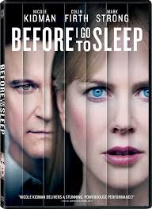
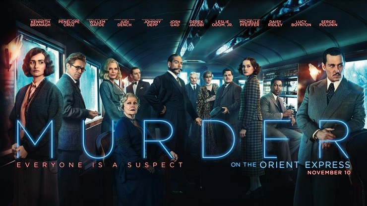
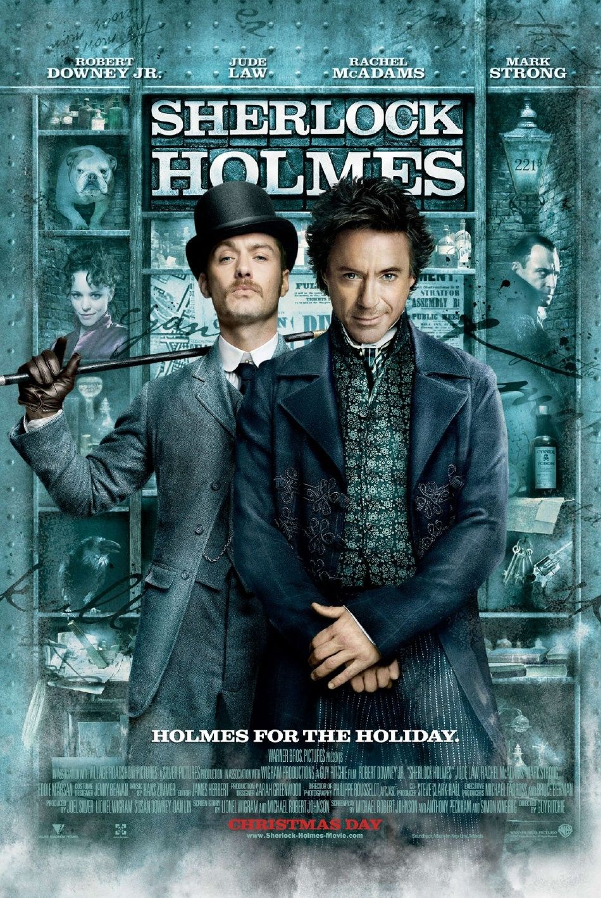
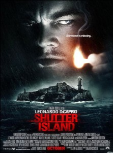
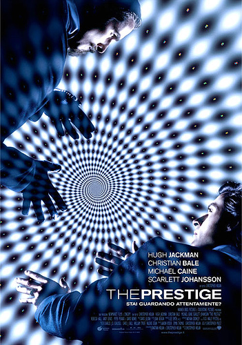

5.1: Before I Go to Sleep
Ratings : 🌟 6.4
Genre :DramaMysteryThriller
Release Date : 31 October 2014
Watch-Time : 1h 32min.
Director : Rowan Joffe
Starring : Nicole Kidman, Mark Strong, Colin Firth, Anne-Marie Duff
Box-Office : $15.1 million
Storyline:
Forty year old Christine Lucas wakes up in bed with a man she does not know, in an unfamiliar house. The man explains that he is her husband, Ben, and that she suffered brain damage from a car accident ten years earlier. Christine wakes up every morning with no memory of her life from her early twenties onwards. Christine receives treatment from Dr. Nasch, a neurologist at a local hospital who provides her a camera to record her thoughts and progress each day, and calls her every morning to remind her to watch the video in the camera. Soon, she starts to discover the truth around her.
5.2: Murder on the Orient Express
Ratings : 🌟 6.5
Genre : CrimeDramaMystery
Release Date : 10 November 2017
Watch-Time : 1h 54min.
Director : Kenneth Branagh
Starring : Kenneth Branagh, Penélope Cruz, Willem Dafoe, Judi Dench, Johnny Depp, Josh Gad, Derek Jacobi, Leslie Odom Jr., Michelle Pfeiffer, Daisy Ridley
Box-Office : $352.8 million
Storyline:
Hercule Poirot, the best detective in the world, decides to travel on the Orient Express. The train accidentally gets stopped because of a small avalanche. Little did he know that a murder was planned and that a person on this train was capable of committing such crime.
4: The Invitation
Ratings : 🌟 6.6
Genre : DramaMysteryThriller
Release Date : 8 April 2016
Watch-Time : 1h 40min.
Director : Karyn Kusama
Starring : Logan Marshall-Green, Tammy Blanchard, Michiel Huisman, Emayatzy Corinealdi, Lindsay Burdge, Michelle Krusiec, Mike Doyle, Jay Larson, John Carroll Lynch
Box-Office : $354,835
Storyline:
Will and Eden were once a loving couple. After a tragedy took their son, Eden disappeared. Two years later, out of the blue, she returns with a new husband... and as a different person, eerily changed and eager to reunite with her ex and those she left behind. Over the course of a dinner party in the house that was once his, the haunted Will is gripped by mounting evidence that Eden and her new friends have a mysterious and terrifying agenda. But can we trust Will's hold on reality? Or will he be the unwitting catalyst of the doom he senses?
3.1: Now You See Me

Ratings : 🌟 7.3
Genre : CrimeMysteryThriller
Release Date : 31 May 2013
Watch-Time : 1h 55min.
Director : Louis Leterrier
Starring : Jesse Eisenberg, Mark Ruffalo, Woody Harrelson, Mélanie Laurent, Isla Fisher, Dave Franco, Common, Michael Caine, Morgan Freeman
Box-Office : $351.7 million
Storyline:
Four magicians each answer a mysterious summons to an obscure address with secrets inside. A year later, they are the Four Horsemen, big time stage illusionists who climax their sold-out Las Vegas show with a bank apparently robbed for real. This puts F.B.I. Agents Dylan Rhodes and Interpol Agent Alma Dray on the case to find out how they did it. However, this mystery proves to be difficult to solve, even with the insights of professional illusion exposer Thaddeus Bradley. What follows is a bizarre investigation where nothing is what it seems to be, with illusions, dark secrets, and hidden agendas galore as all involved are reminded of a great truth in this puzzle: the closer you look, the less you see.
3.2: Sherlock Holmes
Ratings : 🌟 7.6
Genre : ActionAdventureMystery
Release Date : 25 December 2009
Watch-Time : 2h 8min.
Director : Guy Ritchie
Starring : Robert Downey Jr., Jude Law, Rachel McAdams, Mark Strong, Eddie Marsan
Box-Office : $524 million
Storyline:
After finally catching serial killer and occult "sorcerer" Lord Blackwood, legendary sleuth Sherlock Holmes and his assistant Dr. Watson can close yet another successful case. But when Blackwood mysteriously returns from the grave and resumes his killing spree, Holmes must take up the hunt once again. Contending with his partner's new fiancée and the dimwitted head of Scotland Yard, the dauntless detective must unravel the clues that will lead him into a twisted web of murder, deceit, and black magic - and the deadly embrace of temptress Irene Adler.
2.1: Get Out
Ratings : 🌟 7.7
Genre : HorrorMysteryThriller
Release Date : 24 February 2017
Watch-Time : 1h 44min.
Director : Jordan Peele
Starring : Daniel Kaluuya, Allison Williams, Bradley Whitford, Caleb Landry Jones, Stephen Root, Catherine Keener
Box-Office : $255.4 million
Storyline:
Chris and his girlfriend Rose go upstate to visit her parents for the weekend. At first, Chris reads the family's overly accommodating behavior as nervous attempts to deal with their daughter's interracial relationship, but as the weekend progresses, a series of increasingly disturbing discoveries lead him to a truth that he never could have imagined.
2.2: Knives Out

Ratings : 🌟 7.9
Genre : ComedyCrimeDrama
Release Date : 27 November 2019
Watch-Time : 2h 10min.
Director : Rian Johnson
Starring : Daniel Craig, Chris Evans, Ana de Armas, Jamie Lee Curtis, Michael Shannon, Don Johnson, Toni Collette, Lakeith Stanfield, Katherine Langford, Jaeden Martell, Christopher Plummer
Box-Office : $457.7 million
Storyline:
When renowned crime novelist Harlan Thrombey (Christopher Plummer) is found dead at his estate just after his 85th birthday, the inquisitive and debonair Detective Benoit Blanc (Daniel Craig) is mysteriously enlisted to investigate. From Harlan's disfunctional family to his devoted staff, Blanc sifts through a web of red herrings and self-serving lies to uncover the truth behind Harlan's untimely death.
1.1: Shutter Island
Ratings : 🌟 8.2
Genre : MysteryTriller
Release Date : 19 February 2010
Watch-Time : 2h 18min.
Director : Martin Scorsese
Starring : Leonardo DiCaprio, Mark Ruffalo, Ben Kingsley, Michelle Williams, Emily Mortimer, Patricia Clarkson, Max von Sydow
Box-Office : $294.8 million
Storyline:
In 1954, up-and-coming U.S. marshal Teddy Daniels is assigned to investigate the disappearance of a patient from Boston's Shutter Island Ashecliffe Hospital. He's been pushing for an assignment on the island for personal reasons, but before long he thinks he's been brought there as part of a twisted plot by hospital doctors whose radical treatments range from unethical to illegal to downright sinister. Teddy's shrewd investigating skills soon provide a promising lead, but the hospital refuses him access to records he suspects would break the case wide open. As a hurricane cuts off communication with the mainland, more dangerous criminals "escape" in the confusion, and the puzzling, improbable clues multiply, Teddy begins to doubt everything - his memory, his partner, even his own sanity.
1.2: The Prestige
Ratings : 🌟 8.5
Genre : MysteryDramaSci-Fi
Release Date : 20 October 2006
Watch-Time : 2h 10min.
Director : Christopher Nolan
Starring : Hugh Jackman, Christian Bale, Michael Caine, Scarlett Johansson, Rebecca Hall, Andy Serkis, David Bowie, Piper Perabo
Box-Office : $109.7 million
Storyline:
In the end of the nineteenth century, in London, Robert Angier, his beloved wife Julia McCullough, and Alfred Borden are friends and assistants of a magician. When Julia accidentally dies during a performance, Robert blames Alfred for her death, and they become enemies. Both become famous and rival magicians, sabotaging the performance of the other on the stage. When Alfred performs a successful trick, Robert becomes obsessed trying to disclose the secret of his competitor with tragic consequences.